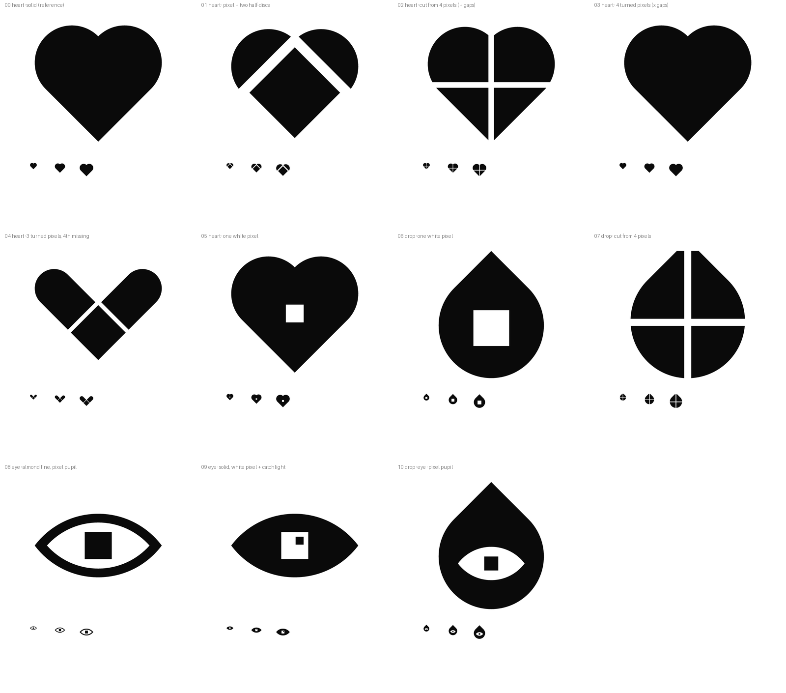
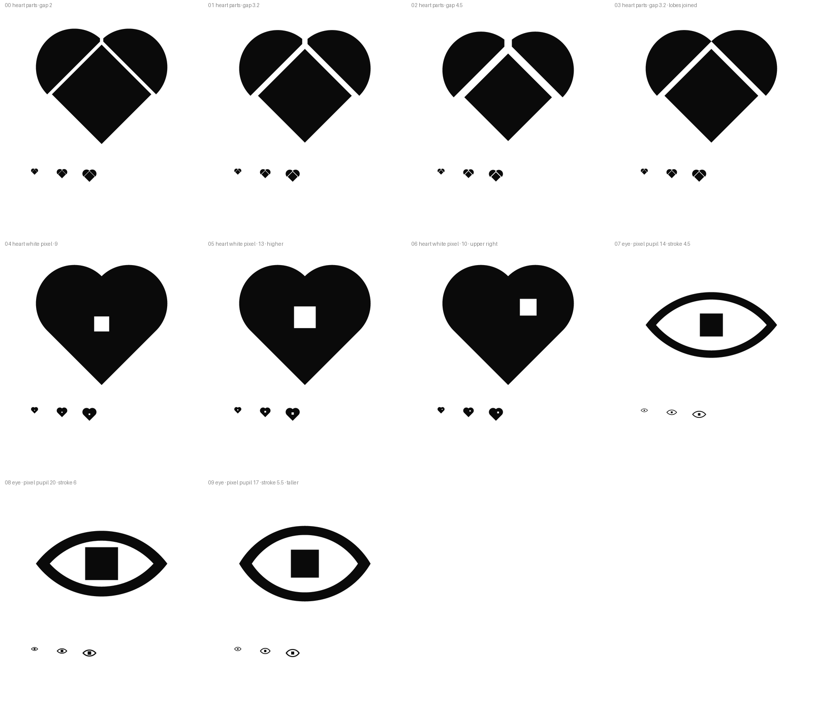
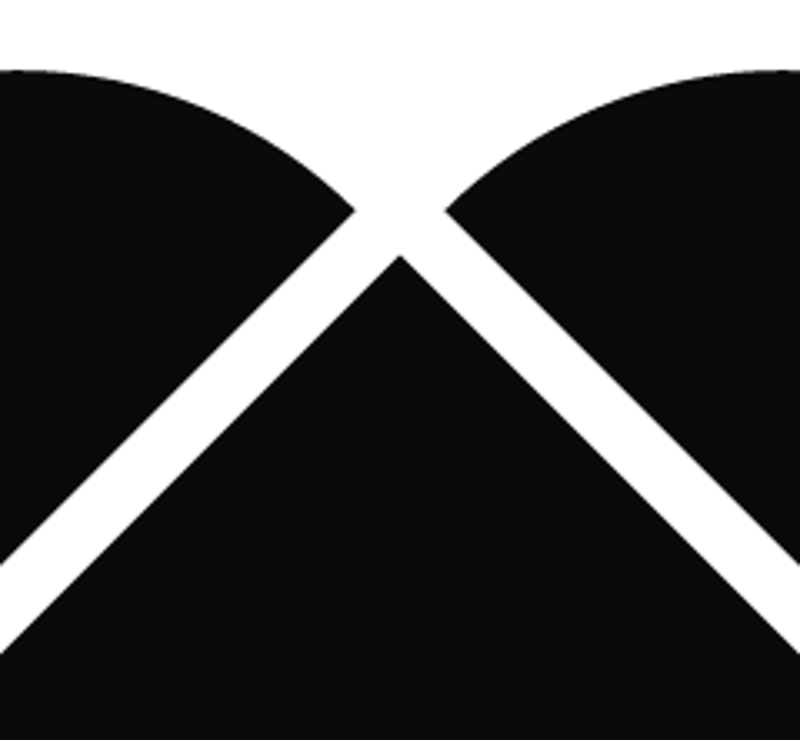

Every classic geometric heart is a square turned on its corner with two half-circles on top. We simply let you see the square. At the heart of Algomash is a pixel: the smallest unit a camera reads.
The message lands at once: health, read digitally. The visible construction, with even hairline gaps between pixel and lobes, is what makes it feel engineered rather than decorative.
Simplest. A solid heart with a single white pixel: a digital heart. Very clear, less distinctive.
Most distinctive. A calm eye whose pupil is a pixel: half human, half camera. Risk: eyes can feel watchful.

11 combinationsHeart-from-a-pixel, heart+pixel and pixel-eye survived. Plus-sign heart (generic), three-pixel "tick", drop+square ("house") killed.

ProportionsGap widths, pixel size, pupil size. The joined lobes left slivers at the dip.

Exact constructionHalf-discs pushed out along their normals: equal gaps, no slivers.